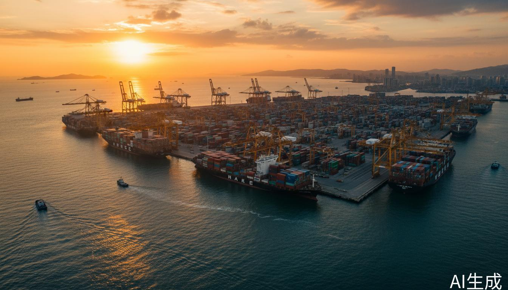
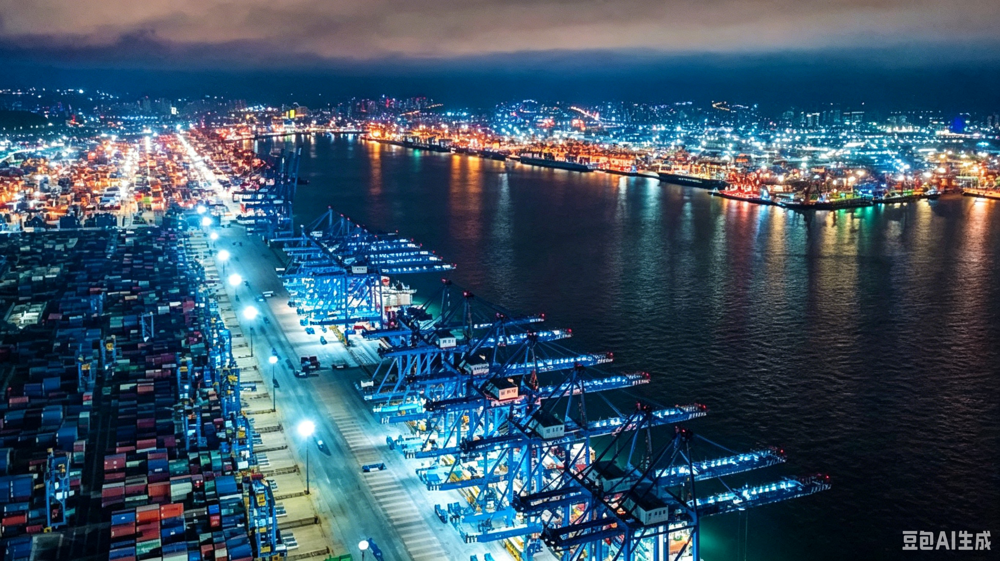
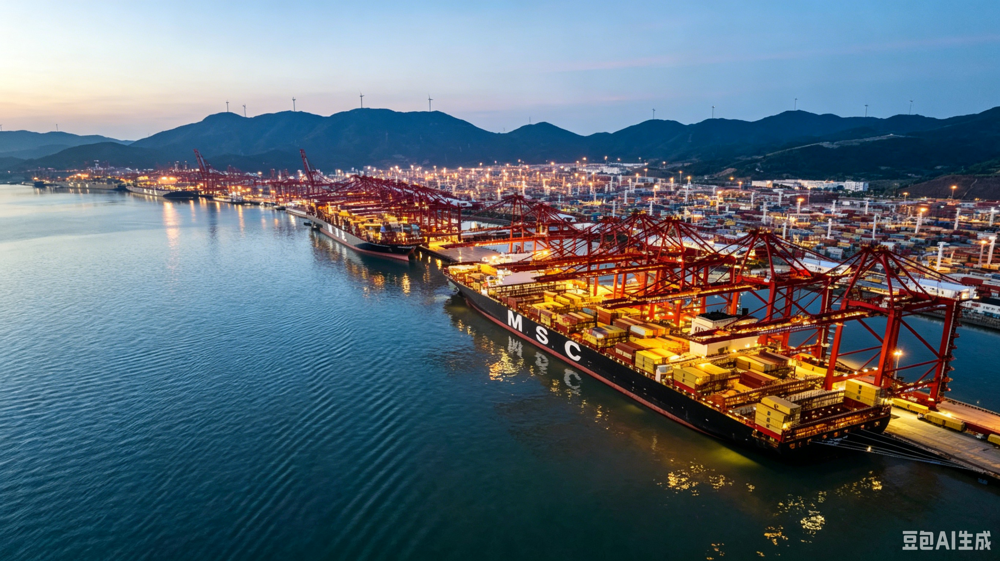
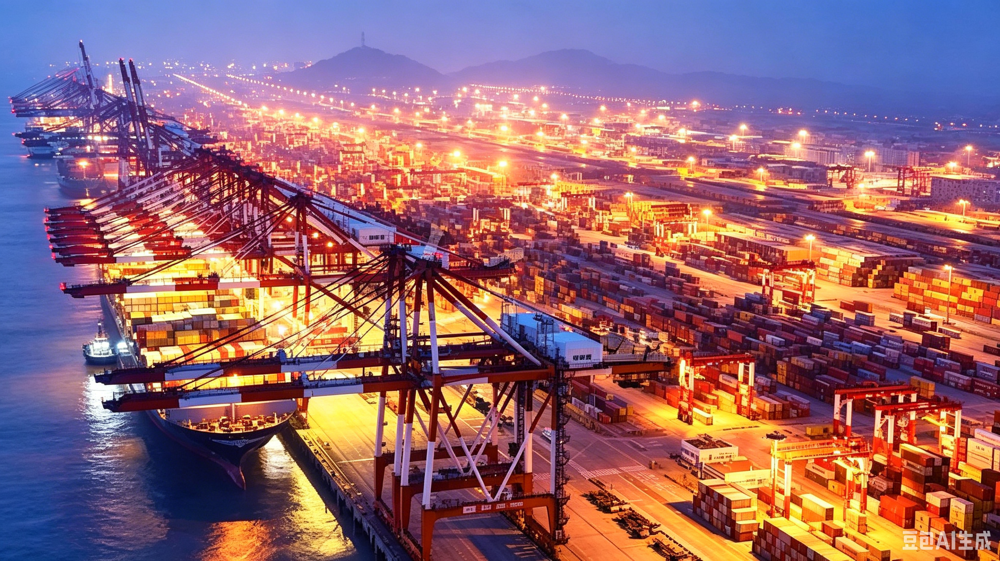
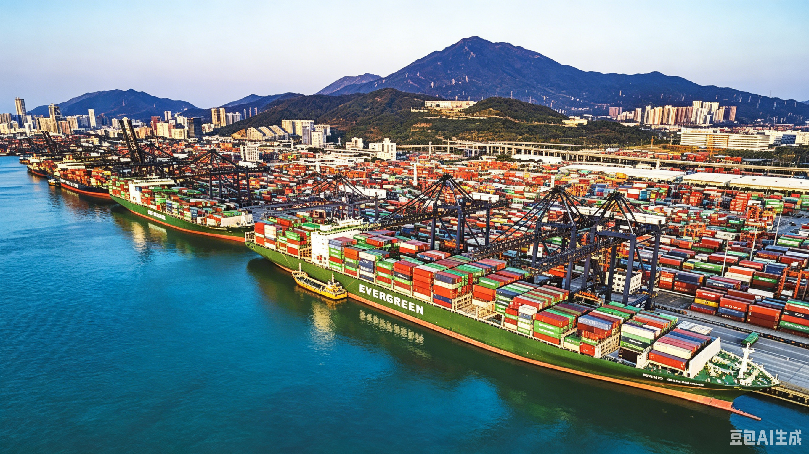
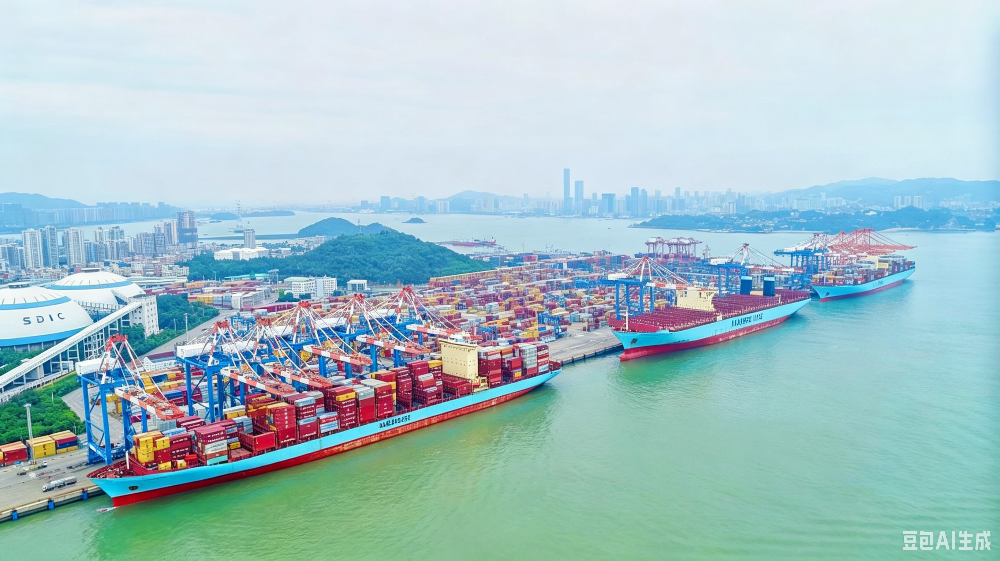
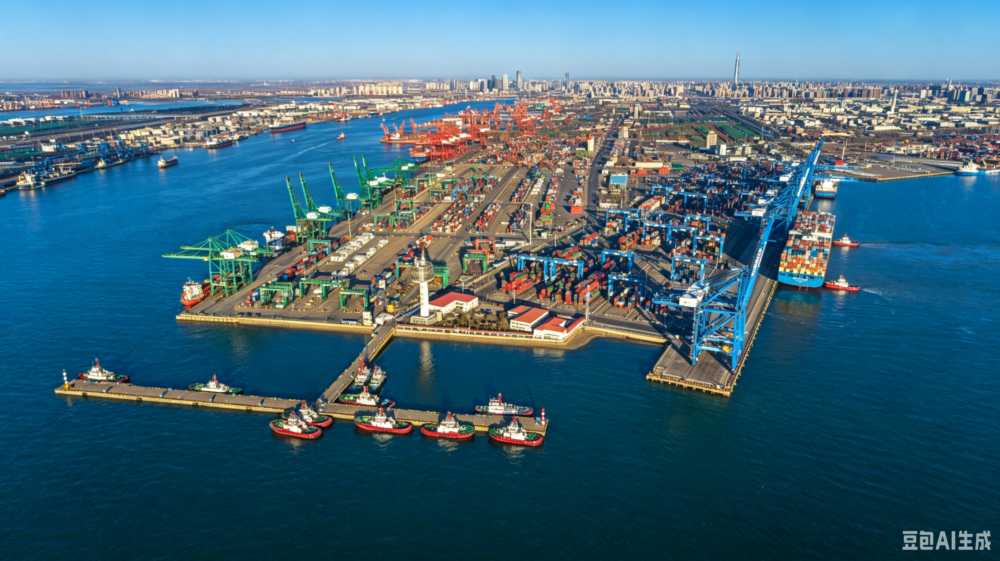
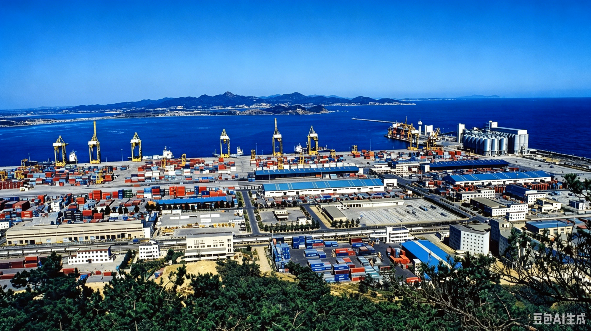

中国沿海港口网络
从产业带到港口，最优路径


根据你的产品、目的地、时效要求，灵活选择最优出口港
降低物流成本，缩短交货周期

机械设备、化工品、农产品、日韩航线货物、中亚班列货物
日韩、东南亚、美西、欧洲、中亚（铁路）

核心优势：吞吐量全球第一，欧洲航线优势，义乌小商品最近主港
适合产品：日用消费品、五金工具、电子产品

核心优势：航线最密集，高端制造首选，空运衔接便利
适合产品：高货值产品、紧急订单

核心优势：电子产品出口最快，美西快线，跨境电商首选
适合产品：消费电子、电器、跨境电商货物

核心优势：对台贸易最便利，东南亚快线，石材建材出口
适合产品：建材、石材、对台/东南亚货物

核心优势：首都经济圈出海口，蒙古/俄罗斯中转，汽车出口
适合产品：机械设备、汽车、钢材、华北产地货物

核心优势：东北地区出海门户，日韩俄航线最近，冷链物流优势，RCEP成员国全覆盖
适合产品：化工品、机电设备、汽车零部件、粮食深加工、冻品、对日韩俄贸易货物
输入您的出货信息，获取最优港口推荐
| 目的地 | 天数 | 船期 |
|---|---|---|
| 韩国釜山 | 2-3天 | 每日 |
| 日本横滨 | 3-5天 | 每日 |
| 泰国曼谷 | 7-9天 | 每周3班 |
| 洛杉矶 | 13-15天 | 每周5班 |
| 鹿特丹 | 22-25天 | 每周2班 |
| 阿拉木图 | 5-7天 | 每周2班 |
获取定制化的物流方案与报价